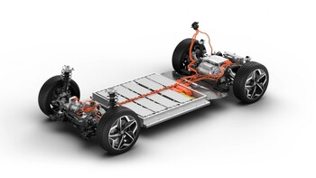
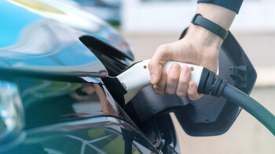
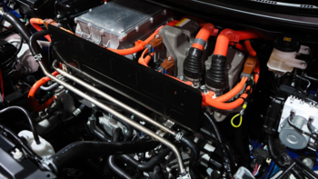

Artigos Populares

Ler o artigo
Como manter as baterias dos carros elétricos?
Para manter as baterias dos carros elétricos, evite descargas completas, carregue entre 20-80%, use carregadores recomendados, evite calor extremo e faça manutenção regular.

Ler o artigo
Carros elétricos: conheça os incentivos fiscais para 2024?
Se comprou, ou está nos seus planos comprar um carro elétrico em 2023, saiba que existem vários incentivos dos quais pode usufruir.

Ler o artigo
Carros elétricos: como saber se as baterias estão boas
Para saber se as baterias dos carros elétricos estão boas, verifique a autonomia, a capacidade de carga, a saúde da bateria via software e faça inspeções regulares.
Perguntas Frequentes
Quanto tempo duram as baterias?
As baterias dos carros elétricos têm uma vida útil estimada de 30 anos, segundo dados da UVE, sendo
que destes 30 anos, pelo menos 15 serão passados a alimentar o motor de um carro elétrico.
Depois desses 15 anos, estas baterias podem ser reutilizadas noutras funções como por exemplo
armazenar energia elétrica em habitações, empresas ou edifícios públicos, antes de, por fim, e no
último ciclo, serem recicladas.
As baterias dos carros elétricos, como são feitas a partir de iões de lítio, podem ser recicladas
quase na sua totalidade. Ou seja, para além de durarem praticamente toda a vida útil do automóvel, e
ao contrário do que se pensa, não são prejudiciais para o ambiente, e têm quase sempre uma 2ª vida.
Mas… e se porventura, as baterias avariarem antes dos 15 anos?
Efetivamente pode acontecer… Os carros não são máquinas perfeitas, independentemente de serem a
combustão ou elétricos.
Mas os carros elétricos já estão desenvolvidos a tal ponto que a confiança das marcas nesta
tecnologia é total, tanto que, a garantia destes automóveis é por norma sempre superior à garantia
de um modelo equivalente a combustão.
A grande generalidade das marcas oferece garantias de 7, 8 ou até 10 anos nos modelos eletrificados.
Como manter as baterias dos carros elétricos
No caso das baterias de iões de lítio, que são as mais comuns atualmente, existem algumas boas
práticas para assegurar a sua longevidade. Sendo assim, é aconselhável nunca deixar que as baterias
descarreguem completamente, mantendo a sua carga entre os 20% e os 80%.
Isto porque o carregamento gera calor e quanto mais tempo a bateria estiver ligada, maiores serão os
possíveis danos. Ou seja, se não precisar do carro com autonomia máxima no dia seguinte, ou se o vai
deixar uns dias parado, evite carregar a bateria até aos 100%.
Qual a autonomia real de um carro elétrico?
A autonomia de um carro elétrico depende de vários fatores, onde se incluem a
capacidade da bateria (medida em kWh), a aerodinâmica do veículo, o estilo de condução, o tipo de
utilização (cidade ou autoestrada), a eficiência da bateria e a temperatura exterior.
Para condutores que fazem 50 quilómetros diários nas deslocações para o trabalho ou dentro da
cidade, a autonomia oferecida por um citadino é suficiente para alguns dias de utilização sem ser
necessário ligar o carro à corrente elétrica.
Qual a potência necessária para carregar um carro elétrico?
Para saber qual a potência contratada a escolher, tem de verificar qual a
potência da Wallbox que pretende instalar e optar por uma superior. E, muito importante: para
proceder à instalação de um carregador de 11 kW ou 22 kW, o contador de energia em sua casa já deve
ser trifásico e também com uma potência superior à do carregador.
Ou seja, se escolheu instalar em casa uma Wallbox de 3,7 kW, a potência contratada terá de ser de
4,6 kVA/5,75 kVA no mínimo. Já para a Wallbox de 7,4 kW, a potência contratada deverá ser de 10,35
kVA monofásico. As Wallbox de 11 kW e 22 kW, obrigam a contratar potências de 13,8 e 27,60 kVA
trifásico. Tire todas as dúvidas
Benefícios fiscais para carros elétricos em 2022
Se está nos seus planos comprar um carro elétrico este ano, saiba que pode
candidatar-se ao incentivo do Estado no valor de 4000€ até 30 de novembro de 2022.
Além disso, existem ainda benefícios fiscais para particulares, como a isenção do Imposto Sobre
Veículos e Imposto Único de Circulação, e para empresas, como a isenção da Tributação Autónoma e a
possibilidade de deduzir o IVA.